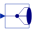

RealVectorOutputReal output connector used for vector of connectors |
This information is part of the Modelica Standard Library maintained by the Modelica Association.
Real output connector that is used for a vector of connectors, for example DeMultiplex, and has therefore a different icon as RealOutput connector.
|  |
Modelica.Blocks.Routing DeMultiplexer block for arbitrary number of output connectors |